1. Запуск програми.
Нічого важкого тут немає, якщо ви щось робите не те, то вам будуть вилізати підсказки.
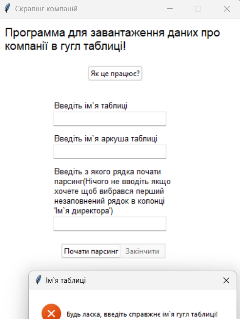
2. Ввести ім`я таблиці.
Ім'я таблиці можно отримати зверху зліва в кутку коли відкриваєшь гугл таблицю.
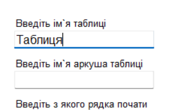
3. Ввести ім`я аркуша в таблиці.
Ім`я аркуша буде знаходитися знизу в скролл барі гугл таблиці.
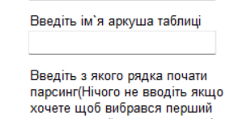
4. Ввести рядок з якого почне парситися інформація.
В це поле треба ввести число рядка з якого почнеться парсинг інформації, якщо хочете почати з останнього рядка який заповнений в колонці "Ім`я директора" нетреба нічого не писати.
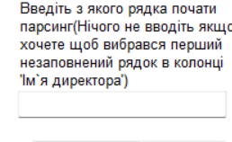
5. Натиснути "Почати парсинг".
Натисніть парсинг якщо ви переконані що ввели все правильно, та якщо ви знаєте що таблиця має правильну архітектуру(щоб дізнатись яку, дивіться нижче).
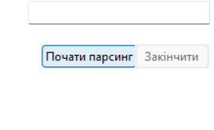
Як отримати файл credentials.json?
Якщо в вас вилізла така помилка:
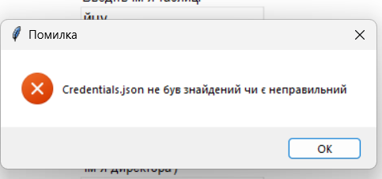
Це значить що вам треба зробити чи змінити credentials.json.
Для цього вам треба зайти в аккаунт де знаходиться таблиця.
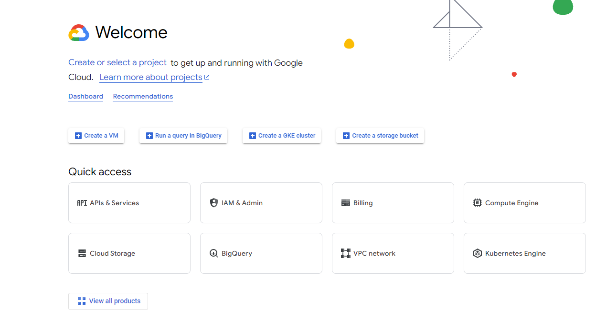
Далій треба створити проект відкривши зліва зверху селект бокс.
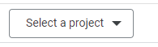
Натистути на "Новий проект".
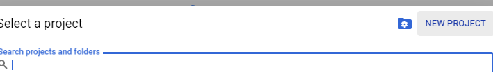
Створити ваш проект.
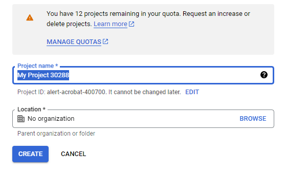
Вибрати його.
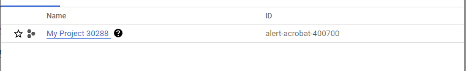
Вибрати "APIs & Services".
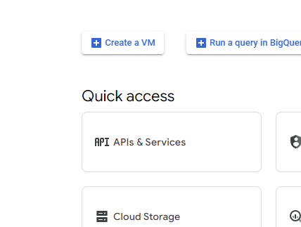
Вибрати "Дозволити APIs & Services".
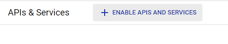
Знайти ці два вокрспейса.
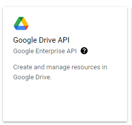
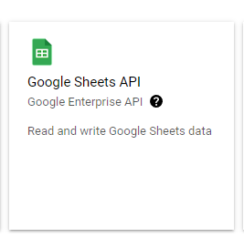
Відкрити і дозволити усі.
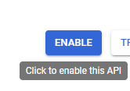
Зверху відкрити "Create credentials".
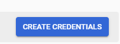
Обираємо такі відповіді і натискаємо "далій".
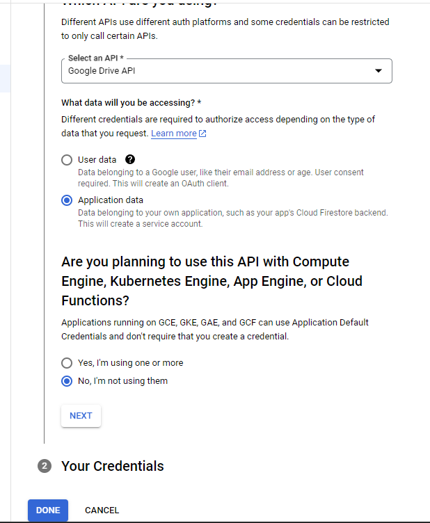
Нам відкривається панель де треба створити сервісний профіль.
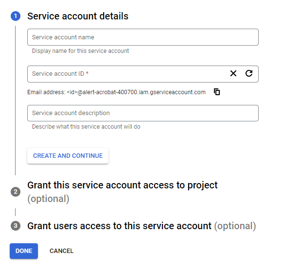
Після закінчення переходимо в "Credentials".
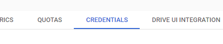
Відкриваємо сервісний аккаунт.
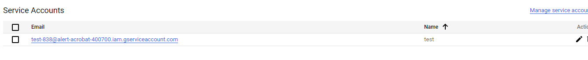
Переходимо в "ключі".
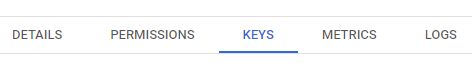
Створюємо новий JSON ключ.
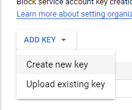
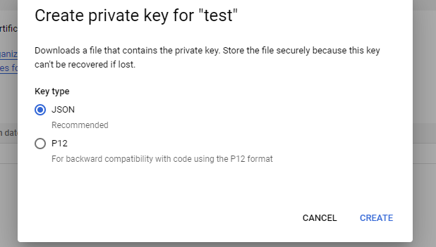
Змінюємо ім`я ключа на credentials.json та закидуємо в основну папку з exe файлом програми. Також копіюємо емел сервісного аккаунта і переходимо до таблиці.
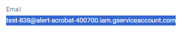
В таблиці додаємо аккаунту доступ до редагування. І все, можно використовувати програму
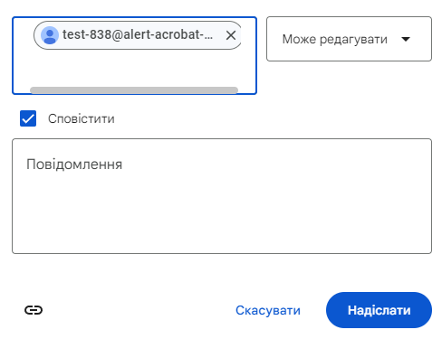
Яку архітектуру повинна мати таблиця?
Таблиця повинна мати вільні F-L колонки включно, та на колонці С повинні знаходитися Податкові номера.
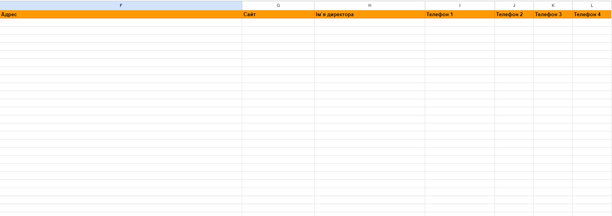
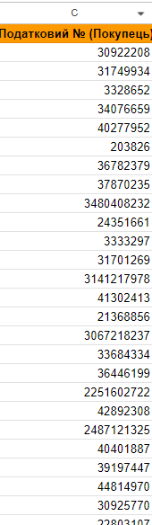